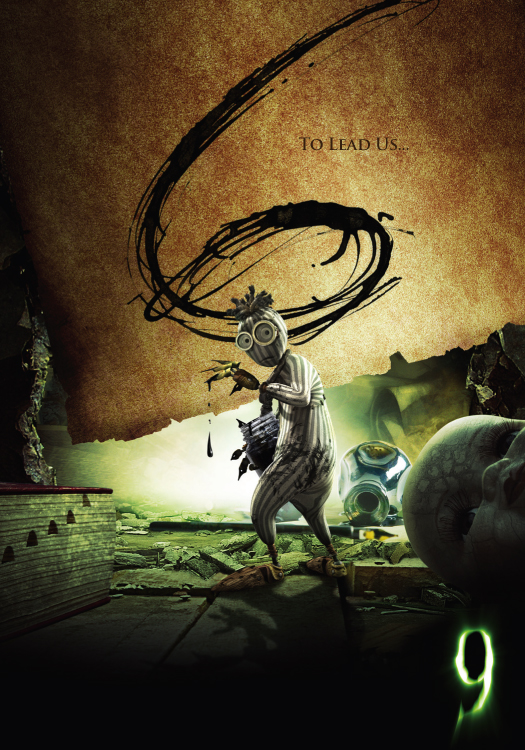
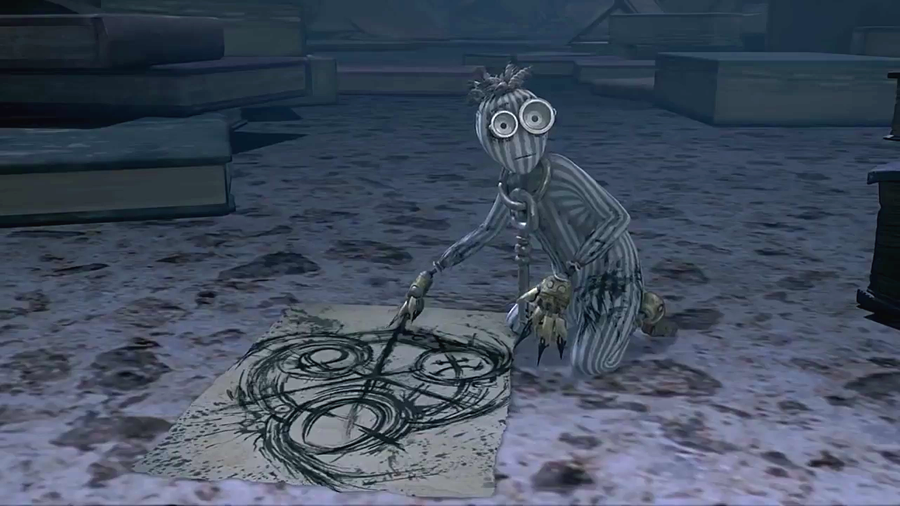
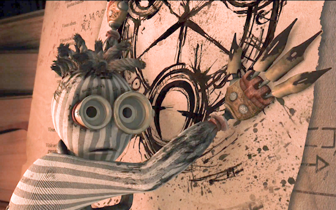

6 is the crazed artist and seer of the group. He originally was more of clairvoyant character who could see into the future, but was sadly reduced to an unintelligible outcast.
Despite this, 6 is able to alert the others to danger and the origins of their creation through his drawings and interactions with 9.
6 has so many "Tim Burton" elements it's not even funny. He's got a neat striped canvas body, different-sized optics, wild unkempt yarn hair, and ink blotches everywhere.
The key around his neck belongs to a small jewelry box (this concept was scrapped unfortunately).
6 uses his pen nib fingers to draw all kinds of things, but mainly "the source" whatever that means...

6 with one of his numerous drawings of the source.

6 attempting to explain the source to 9.
Concept art for 6.